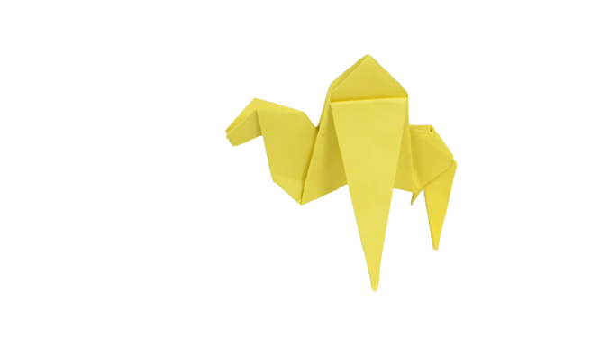

Intresting facts
THEIR FEET WORK LIKE SALAD TONGS. .
ALMOST HALF OF ALL KNOWN SPECIES LIVE IN MADAGASCAR.
CHAMELEONS VARY WILDLY IN TERMS OF SIZE.

Intresting facts
There are two types of camels: One humped or “dromedary” camels and two humped Bactrian camels.
Camels have three sets of eyelids and two rows of eyelashes to keep sand out of their eyes.
Camels have thick lips which let them forage for thorny plants other animals can't eat.